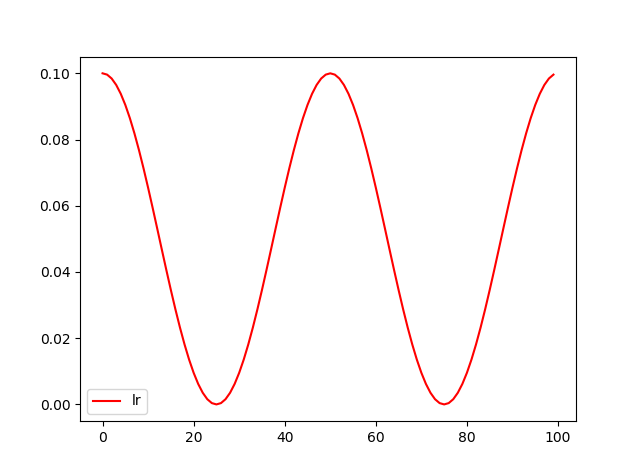

Pytorch 学习率调整
学习率设置对于学习过程来说相当重要。学习率过低会导致学习速度太慢，学习率过高又容易导致难以收敛。在很多学习过程中，都会采用动态调整学习率的方法。刚开始训练的时候，学习率设置大一点，以加快学习速度；之后逐渐减小学习率，来寻找最优解。
那么在Pytorch中，如在训练过程中动态地调整学习率呢？
优化器Optimizer
在说学习率调整方法之前，先来了解一下Pytorch中的优化器Optimizer机制。
用过Pytorch的都知道，模型训练时的固定搭配
1 | loss.backward() |
简单来说，loss.backward()就是反向计算出各参数的梯度，然后optimizer.step()就是更新网络中的参数，optimizer.zero_grad()将这一轮的梯度清零，防止这一轮的梯度影响下一轮的更新。
常用优化器都在torch.optim包中，因此需要先导入包：
1 | import torch.optim.Adam |
这里以常用的Adam优化器和SGD优化器为例，介绍一下Pytorch中的优化器使用方法。
假设我们有一个网络如下，下面的例子都以此网络作为例子：
1 | class Net(nn.Module): |
Optimizer基本属性
所有Optimizer公有的一些基本属性：
- lr: learning rate，学习率
- eps: 学习率最小值，在动态更新学习率时，学习率最小不会小于该值。
- weight_decay: 权值衰减。相当于对参数进行L2正则化（使模型复杂度尽可能低，防止过拟合），该值可以理解为正则化项的系数。
- betas: （待研究）
- amsgrad: (bool)（待研究）
每个Optimizer都维护一个param_groups的list。该list中维护需要优化的参数以及对应的属性设置。
optimizer基本方法
- add_param_group(param_group)： 为optimizer的param_groups增加一个参数组。这在微调预先训练的网络时非常有用，因为冻结层可以训练并随着训练的进行添加到优化器中。
- load_state_dict(state_dict)： 加载optimizer state。参数必须是optimizer.state_dict()返回的对象。
- tate_dict()： 返回一个dict，包含optimizer的状态：state和param_groups。
- step(closure)： 执行一次参数更新过程。
- zero_grad()： 清除所有已经更新的参数的梯度。
我们在构造优化器时，最简单的方法通常如下：
1 | model = Net() |
model.parameters()返回网络model的全部参数。
将model的全部参数传入Adam中构造出一个Adam优化器，并设置 learning rate=0.1。因此该 Adam 优化器的 param_groups 维护的就是模型 model 的全部参数，并且学习率为0.1。这样在调用optimizer_Adam.step()时，就会对model的全部参数进行更新。
Optimizer的param_groups是一个list，其中的每个元素都是一组独立的参数，以dict的方式存储。结构如下
1 | -param_groups |
这样可以实现很多灵活的操作，比如
只训练模型的一部分参数
例如，只想训练上面的model中的layer参数，而保持layer2的参数不动。可以如下设置Optimizer：
1 | model = Net() |
不同部分的参数设置不同的学习率（以及其他属性）
例如，要想使model的layer参数学习率为0.1，layer2的参数学习率为0.2，可以如下设置Optimizer：
1 | model = Net() |
这种方法更为灵活，手动构造一个params_dict列表来初始化Optimizer。注意，字典中的参数部分的 key 必须为 ‘params’。
这样就可以灵活的设置Optimizer啦。
动态更新learning rate
了解了Optimizer的基本结构和使用方法，接下来就可以看一下，如何在训练过程中动态更新learning rate。
手动修改lr
上面我们了解到，Optimizer的每一组参数维护一个lr，因此，最直接的方法就是我们在训练过程中手动修改Optimizer中对应的lr的值：
1 | model = Net() # 生成网络 |

torch.optim.lr_scheduler
torch.optim.lr_scheduler包中提供了一些类，用于动态修改lr。
torch.optim.lr_scheduler.LambdaLrtorch.optim.lr_scheduler.StepLRtorch.optim.lr_scheduler.MultiStepLRtorch.optim.lr_scheduler.ExponentialLRtorch.optim.lr_sheduler.CosineAnneaingLRtorch.optim.lr_scheduler.ReduceLROnPlateau
注意： pytorch 1.1.0版本之后，在创建了lr_scheduler对象之后，会自动执行第一次lr更新（可以理解为执行一次scheduler.step()）。因此，在使用的时候，需要先调用optimizer.step()，再调用scheduler.step()。如果创建了lr_scheduler对象之后，先调用scheduler.step()，再调用optimizer.step()，则会跳过了第一个学习率的值。
1 | # 调用顺序 |
注意： 创建scheduler时，所传入的Optimizer的param_groups必须有一个initial_lr键作为初始学习率。如果last_epoch=-1，则用于初始化的Optimizer可以没有initial_lr键，以 lr 键初始化为initial_lr。
torch.optim.lr_scheduler.LambdaLr
torch.optim.lr_scheduler.LambdaLR(optimizer, lr_lambda, last_epoch=-1)
- Optimizer：优化器实例
- lr_lambda：是一个函数（常用lambda表达式）或函数列表，该函数接收一个int参数（epoch），然后计算出一个系数$\alpha$，最后学习率更新为 $lr = initial_lr * \alpha$。其中lr_lambda如果传入多个函数的list的话，则对应每组param_groups的学习率调整策略。
- last_epoch：（int）上一个epoch数。默认为-1，且当last_epoch=-1时，将lr设置为initial_lr。第一次更新lr时，就按照epoch = last_epoch + 1更新。（比如last_epoch = 1，则第一次lr更新时，就将epoch=2传入上面的lr_lambda函数，得出系数$\alpha$）
需要注意的是，该scheduler每次lr更新，是用initial_lr 乘以系数 $\alpha$，而不是用上一次的lr 乘以系数$\alpha$，即
$$
lr = initial_lr * \alpha
$$
torch.optim.lr_scheduler.StepLR
torch.optim.lr_scheduler.StepLR(optimizer, step_size, gamma=0.1, last_epoch=-1)
每迭代step_size次，学习率乘以gamma。
1 | model = Net() |
torch.optim.lr_scheduler.MultiStepLR
torch.optim.lr_scheduler.MultiStepLR(optimizer, milestones, gamma=0.1, last_epoch=-1)
多段衰减法。milestones传入一个list，指定多个epoch数，每迭代到指定的epoch次数时，lr乘以gamma。
例子：
1 | model = Net() |
torch.optim.lr_scheduler.ExponentialLR
torch.optim.lr_scheduler.ExponentialLR(optimizer, gamma, last_epoch=-1)
每个epoch按指数衰减 lr。
1 | model = Net() |

torch.optim.lr_scheduler.CosineAnnealingLR
torch.optim.lr_scheduler.CosineAnnealingLR(optimizer, T_max, eta_min=0, last_epoch=-1)
按照三角函数规则来更新学习率。
$$
\eta_t = \eta_{min} + \frac{1}{2}(\eta_{max} - \eta_{min})(1 + cos(\frac{T_{cur}}{T_{max}}\pi))
$$
- $\eta_{min}$ 表示最小学习率，即正弦函数最低点
- $\eta_{max}$ 表示最大学习率，设置为initial_lr（在last_epoch=-1时，即为lr）。
- $T_{cur}$ 表示当前epoch数
- $T_{max}$ 表示1/2个cos周期所对应的epoch数值
1 | model = Net() |

torch.optim.lr_scheduler.ReduceLROnPlateau
torch.optim.lr_scheduler.ReduceLROnPlateau(optimizer, mode='min', factor=0.1, patience=10, verbose=False, threshold=0.0001, threshold_mode='rel', cooldown=0, min_lr=0, eps=1e-08)
根据指定的指标量来调整学习率。如果指标量停止变化时，就减小学习率。
参数：
- mode：（str），从（min, max）中选择。
- min：如果指定量不再下降，就减小lr
- max：如果指定量不再上升，就减小lr
- factor：（float），衰减因子，每次更新lr = lr * factor
- patience：（int），容忍度，如果经过patience次迭代后，指标没有变化（上升或下降），就更新lr。
- verbose：（bool），每次更新lr，是否向std输出。
- threshold：（float），阈值，对于制定的指标只有超过阈值才算有变化
- threshold_mode：（str），从（rel，abs）总选择。性能衡量方式。
- rel：
- max模式下：dynamic_threshold = best * ( 1 + threshold )
- min模式下：dynamic_threshold = best * ( 1 - threshold )
- abs：
- max模式下：dynamic_threshold = best + threshold
- min模式下：dynamic_threshold = best - threshold
- rel：
- cooldown：（int），每次调整lr之后，冷却cooldown个epoch，避免lr下降过快
- min_lr：（float or list），学习率最小值。如果给定一个标量值，就param_groups中所有组都设置该最小值；也可以用一个list为每组指定一个最小值。
- eps：（float），lr变化最小值，如果lr的两次变化差距小于eps，则忽略这次变化。
1 | optimizer = torch.optim.SGD(model.parameters(), lr=0.1, momentum=0.9) |